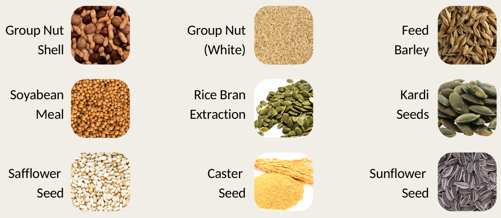
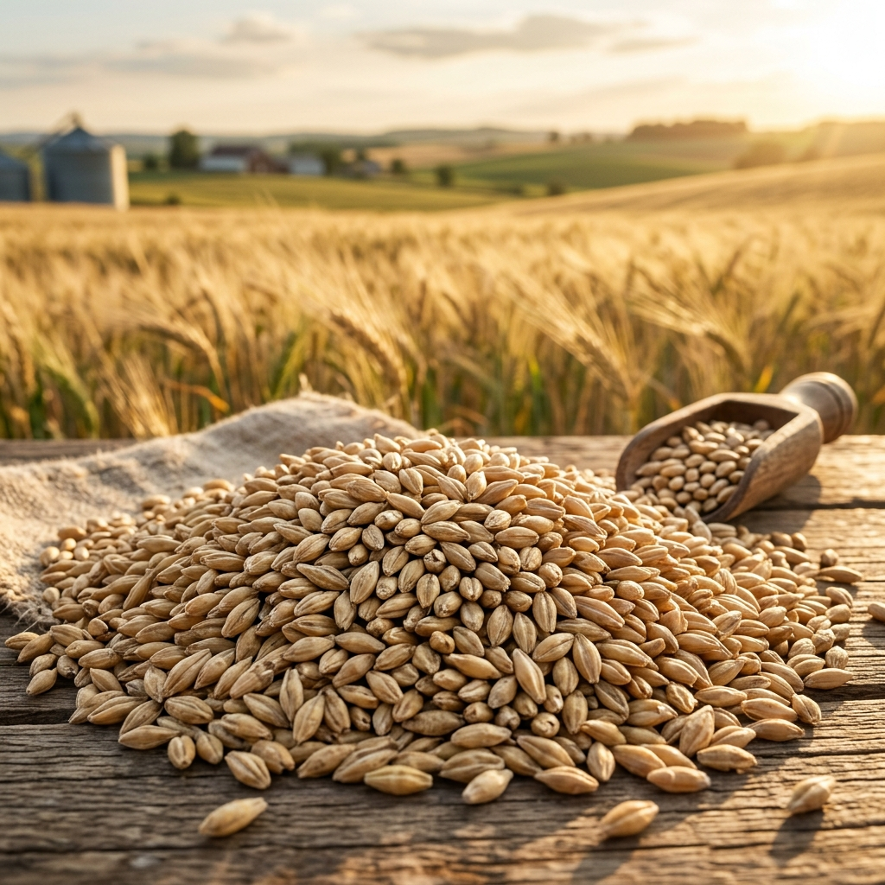
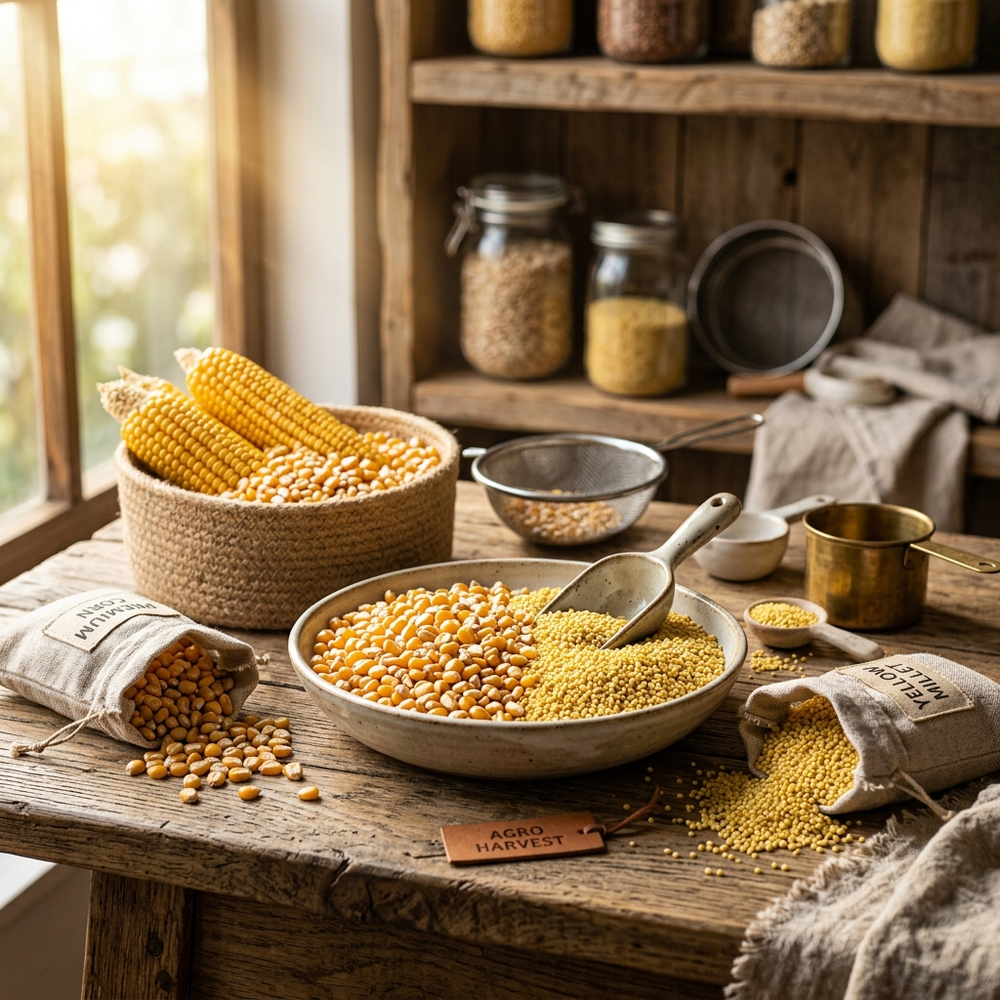
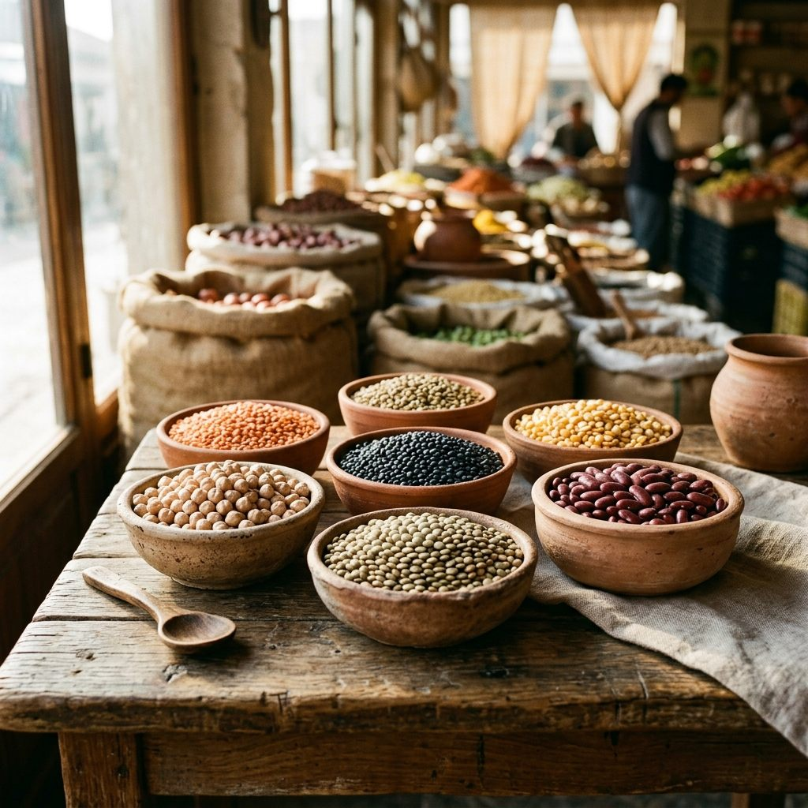
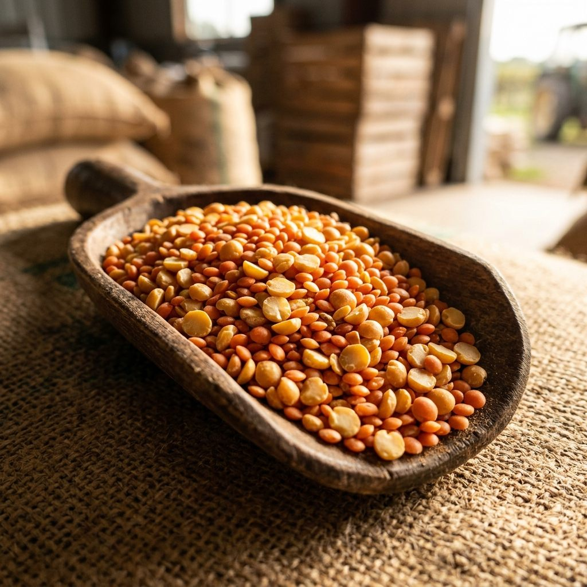
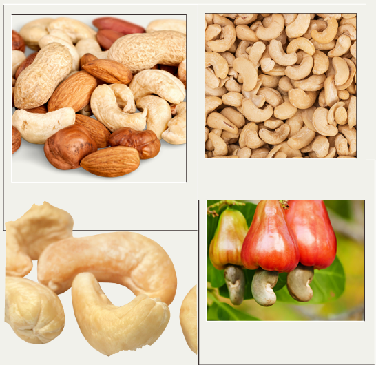
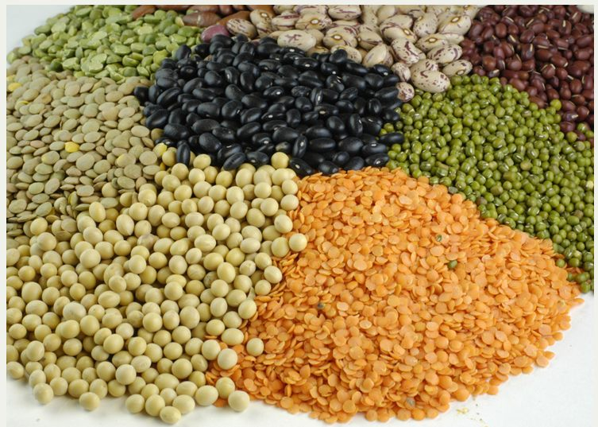
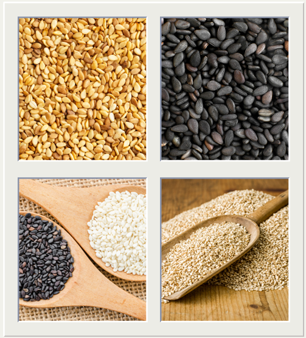
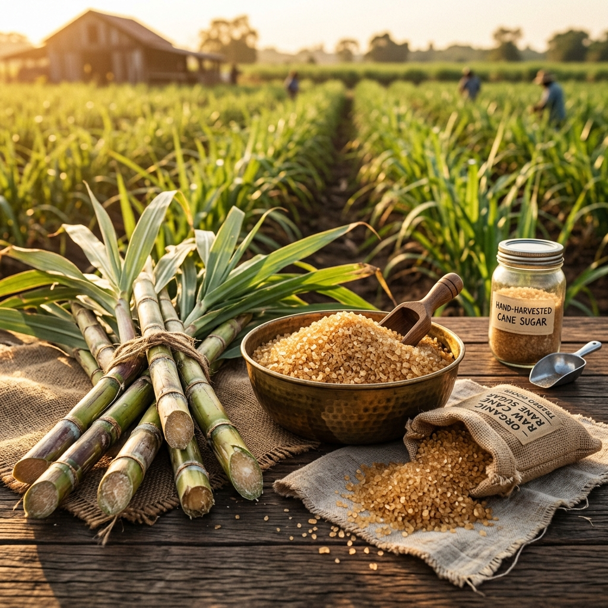
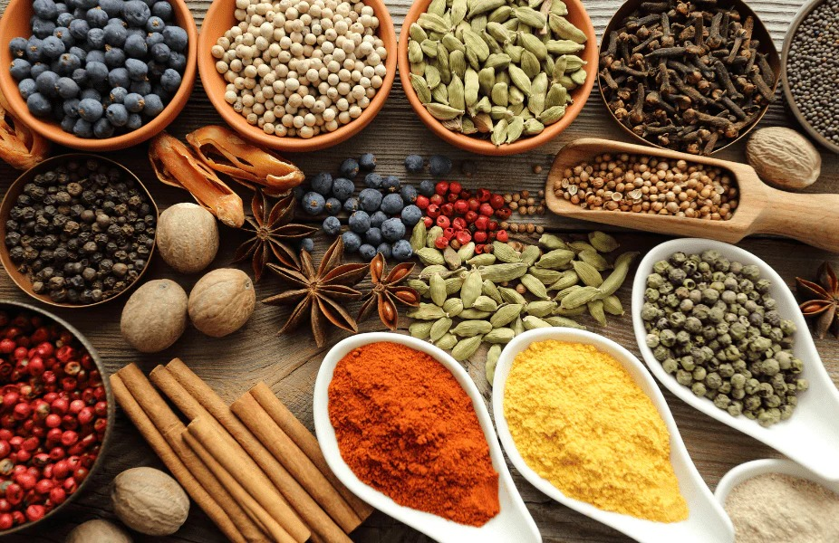

Explore a world of agro excellence — from harvest to delivery.
We are trading the below commodities from different origins:
When it comes to wheat, look no further. The pioneers of wheat imports in India, we opened the door for a whole new segment when we started importing wheat about 15 years ago. From then onwards there has been no looking back. We import wheat mainly from Australia, Ukraine & Russia. Wheat flour is sourced from quality millers & customised as per each buyer's requirements.





Trading & Processing of Pulses was the primary family business and has been passed down for 4 generations.
We source premium quality pulses from major global hubs:
We offer quality pulses, which have been widely acclaimed among our clients owing to its purity and freshness. Our range of pulses is renowned for their nutritious, healthy proteins, which is required for maintaining a healthy growth rate. These are one of the indispensable dishes of a daily balanced diet.
Known for its high food value and purity, our range of pulses are available in packs of varying capacity and can be further customized as per the requirements of our customers.
We are dealing with RCN from African origin and kernels from India and Vietnam Origin. Vietnam and India constitute for about 70-80% of the kernel export market. Our team is present at the origins for RCN and We work with companies who have a direct presence like warehousing, factories etc.
Origins we work at:
Kernels are sourced from the best factories in India and Vietnam which are certified by leading agencies like ISO, BV, SGS, TUV etc.


We Deal in the below Organic commodities:
All our organic agricultural products are certified by Leading Internationally recognized Testing Agencies and are sold under the premium brand "SENDRIYA".
Our team of experts guarantee 100% traceability of any organic products traded by us.
We are dealing with Sesame seeds from African and Indian origin. We are dealing with both Hulled and Natural sesame seeds. Hulled sesame is sourced from the best factories which are certified by the Leading agencies like ISO, BV, SGS, TUV.
As China is the world's largest sesame importer, our China office deals with selling of Natural sesame to Chinese buyers. Our team is present at the origins and We work with companies who have a direct presence like warehousing, factories.
Origins we work at:


We indent both Raw & Refined sugar for our clients from Brazil, India, UAE, Ukraine. Cane sugar is sucrose which has been extracted from sugarcane, a tropical plant which produces naturally high concentrations of this sweet substance.
Humans have been utilizing cane sugar in cooking for hundreds of years, and cane sugar was at one point a major element in global trade. Today, most markets carry cane sugar in a variety of forms, from minimally processed raw sugar to sugar cubes; cane sugar typically tends to be a more expensive form of sucrose, but many people prefer it because they believe it has a superior flavour.
We procure a variety of food spices from the leading manufacturers and supply them to the international markets. These spices are packed in packs of different standard capacity. Further, these spices can be packed in different capacity as per the requirement of the customer.
Our experts look after the packaging process and ensure that the packaging is done in such a manner so that they remain fresh and also retain their taste for longer durations. These food products are also safe to consume as well as hygienic. We supply demanding and superior quality spices and food products.
Major Countries of Export are: Middle East, Jordan, Georgia, Gulf States, Malaysia, Singapore, Colombo (Sri Lanka), and Indonesia.
